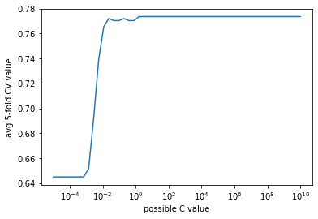

# Importing necessary libraries
import pandas as pd
import numpy as np
import matplotlib.pyplot as plt
import seaborn as sns1 Introduction to Scikit-learn
In this chapter, we’ll learn some scikit-learn functions that will be useful in:
Splitting the data into
trainandtestFitting a model
Tune model hyperparameters to optimize the desired performance metric
We’ll use a classfication problem to illustrate the functions. However, similar functions can be used for regression problems, i.e., prediction problems with a continuous response.
Let us import the scikit-learn libraries useful in developing statistical models.
# sklearn has 100s of models - grouped in sublibraries, such as linear_model
from sklearn.linear_model import LogisticRegression, LinearRegression
# sklearn also has many tools for cleaning/processing data, also grouped in sublibraries
from sklearn.model_selection import train_test_split # splitting one dataset into train and test
from sklearn.metrics import accuracy_score, mean_absolute_error, mean_squared_error, r2_score
from sklearn.preprocessing import StandardScaler#Reading data
data = pd.read_csv('./Datasets/diabetes.csv')Scikit-learn doesn’t support the formula-like syntax of specifying the response and the predictors as in the statsmodels library. We need to create separate objects for predictors and response, which should be array-like. A Pandas DataFrame / Series or a Numpy array are array-like objects.
Let us reference our predictors as object X, and the response as object y.
# Separating the predictors and response - THIS IS HOW ALL SKLEARN OBJECTS ACCEPT DATA (different from statsmodels)
y = data.Outcome
X = data.drop("Outcome", axis = 1)1.1 Splitting data into train and test
Let us create train and test datasets for developing a model to predict if a person has diabetes.
# Creating training and test data
# 80-20 split, which is usual - 70-30 split is also fine, 90-10 is fine if the dataset is large
# random_state to set a random seed for the splitting - reproducible results
X_train, X_test, y_train, y_test = train_test_split(X, y, test_size = 0.2, random_state = 45)Let us find the proportion of classes (‘having diabetes’ (\(y = 1\)) or ‘not having diabetes’ (\(y = 0\))) in the complete dataset.
#Proportion of 0s and 1s in the complete data
y.value_counts()/y.shape0 0.651042
1 0.348958
Name: Outcome, dtype: float64Let us find the proportion of classes (‘having diabetes’ (\(y = 1\)) or ‘not having diabetes’ (\(y = 0\))) in the train dataset.
#Proportion of 0s and 1s in train data
y_train.value_counts()/y_train.shape0 0.644951
1 0.355049
Name: Outcome, dtype: float64#Proportion of 0s and 1s in test data
y_test.value_counts()/y_test.shape0 0.675325
1 0.324675
Name: Outcome, dtype: float64We observe that the proportion of 0s and 1s in the train and test dataset are slightly different from that in the complete data. In order for these datasets to be more representative of the population, they should have a proportion of 0s and 1s similar to that in the complete dataset. This is especially critical in case of imbalanced datasets, where one class is represented by a significantly smaller number of instances than the other(s).
1.1.1
1.1.2 Stratified splitting
We will use the argument stratify to obtain a proportion of 0s and 1s in the train and test datasets that is similar to the proportion in the complete `data.
#Stratified train-test split
X_train, X_test, y_train, y_test = train_test_split(X, y, test_size = 0.2, random_state = 45, stratify=y)#Proportion of 0s and 1s in train data with stratified split
y_train.value_counts()/y_train.shape0 0.651466
1 0.348534
Name: Outcome, dtype: float64#Proportion of 0s and 1s in test data with stratified split
y_test.value_counts()/y_test.shape0 0.649351
1 0.350649
Name: Outcome, dtype: float64The proportion of the classes in the stratified split mimics the proportion in the complete dataset more closely.
Stratified splitting is particularly useful when dealing with imbalanced datasets, where one class is represented by a significantly smaller number of instances than the other(s).
When training a classification model on an imbalanced dataset, the model might not learn enough about the minority class, which can lead to poor generalization performance on new data. This happens because the model is biased towards the majority class, and it might even predict all instances as belonging to the majority class.
By using stratified splitting, we ensure that both the train and test data sets have the same proportion of instances from each class, which means that the model will see enough instances from the minority class during training. This, in turn, helps the model learn to distinguish between the classes better, leading to better performance on new data.
In summary, stratified splitting helps to ensure that the model sees enough instances from each class during training, which can improve the model’s ability to generalize to new data, particularly in cases where one class is underrepresented in the dataset.
# With linear/logistic regression in scikit-learn, especially when the predictors have different orders
# of magn., scaling is necessary. This is to enable the training algo. which we did not cover. (Gradient Descent)
scaler = StandardScaler().fit(X_train)
X_train_scaled = scaler.transform(X_train)
X_test_scaled = scaler.transform(X_test) # Do NOT refit the scaler with the test data, just transform it.
X_train = X_train_scaled
X_test = X_test_scaled# Create a model - not trained yet
logreg = LogisticRegression()
# Train the model
logreg.fit(X_train, y_train)
# Test the model - prediction - two ways to go
y_pred = logreg.predict(X_test) # Get the predicted classes first
print(accuracy_score(y_pred, y_test)*100) # Use the predicted and true classes for accuracy73.37662337662337print(logreg.score(X_test, y_test)*100) # Use .score with test predictors and response to get the accuracy
# Implements the same thing under the hood73.37662337662337print(logreg.coef_) # Use coef_ to return the coefficients - only log reg inference you can do with sklearn[[ 0.32572891 1.20110566 -0.32046591 0.06849882 -0.21727131 0.72619528
0.40088897 0.29698818]]# all metrics exist in sklearn
from sklearn.metrics import precision_score, recall_score, confusion_matrix
print(confusion_matrix(y_test, y_pred))
print(precision_score(y_test, y_pred))
print(recall_score(y_test, y_pred))
# What we covered today:
# A recap of Log. Reg. with sklearn
# Separate the predictors and response (if necessary)
# Split the data into train and test (if necessary)
# Create a model
# Train with .fit
# Predict with .predict or get the accuracy with .score
# Use sklearn metrics with y_pred and y_test
# Same idea with LinearRegression()
# .score returns r-squared by default
# use the appropriate metrics!
###################################################################################################[[87 17]
[24 26]]
0.6046511627906976
0.52# More details on the LogisticRegression model:
# Inputs - for regularization and
# prediction prob.s instead of classes - so we can change the thresholds
# .predict_proba returns the prob.s for both classes
# Two cols for two classes
# Apply your threshold to y_pred_probs[1] (second col)
y_pred_probs = logreg.predict_proba(X_test)
cutoff = 0.3
y_pred2 = y_pred_probs[:,1] > cutoff
y_pred2 = y_pred2.astype(int)
print(confusion_matrix(y_test, y_pred2))
print(precision_score(y_test, y_pred2))
print(recall_score(y_test, y_pred2))[[78 26]
[15 35]]
0.5737704918032787
0.7# Throughout the course, we will create many different models in sklearn, all of them will have
# .fit
# .predict
# .score
# .predict_proba
# methods, among others that are specific to them. Make sure how to use there 4 basic ones.
# Let's take a look at the documentation - always do this for the other models we will see
# Log Reg model has default regularization
# Default (regularization) penalty is "l2" - this means Ridge
# C is 1/lambda - remember that lambda is the hyperparameter that is multiplied with the ridge penalty
# C is 1 by default
# Let's take away the regularization
logreg2 = LogisticRegression(C=1e10)
logreg2.fit(X_train, y_train)
y_pred = logreg2.predict(X_test) # Get the predicted classes first
print(accuracy_score(y_pred, y_test)*100)73.37662337662337# Test accuracy stayed the same - reg was not very necessary
# Too much reg
logreg2 = LogisticRegression(C=1e-10)
logreg2.fit(X_train, y_train)
y_pred = logreg2.predict(X_test) # Get the predicted classes first
print(accuracy_score(y_pred, y_test)*100)
# Test accuracy is even lower - too much reg caused underfitting67.53246753246754# The key to take full advantage of sklearn models is their inputs
# Always read the doc
# In Log Reg, you can switch to Lasso with penalty = 'l1' - for variable selection
# For no regression, besides what we did above, you can use penalty = None
# Recall that C, or lambda, is a hyperparameter, which is optimized with cross-validation
# There is LogisticRegressionCV, just like LassoCV and RidgeCV
# Works the exact same way - check LassoCV and RidgeCV notes
# For all the sklearn models we will create in this course, there will be hyperparameters.
# Mostly more than one for each model
# These hyperparameters will determine how much regularization the model will have
# These models will not have a CV version
# So, we need to use two sklearn tools that implement cross-validation
# cross_val_score - now
# GridSearchCV - later when we get to trees and tree-based models
from sklearn.model_selection import cross_val_score
val_scores = []
hyperparam_vals = 10**np.linspace(-5, 10)
for c_val in hyperparam_vals: # For each possible C value in your grid
logreg_model = LogisticRegression(C=c_val) # Create a model with the C value
val_scores.append(cross_val_score(logreg_model, X_train, y_train, scoring='accuracy', cv=5)) # Find the cv results
import matplotlib.pyplot as plt
plt.plot(hyperparam_vals, np.mean(np.array(val_scores), axis=1))
plt.xlabel('possible C value')
plt.ylabel('avg 5-fold CV value')
plt.xscale('log')
plt.show()
# Train the best model with the hyperparam val that returns the highest average accuracy
logreg_model_best = LogisticRegression(C=hyperparam_vals[np.argmax(np.mean(np.array(val_scores), axis=1))])
# .fit
# .predict & .predict_proba
# .score
# ...
# Log. reg. has one hyperparameter - C.
# More complex models will have more
# If we have two hyperparams - we can use a nested loop and cross_val_score
# or we can use GridSearchCV - more on that when we get to trees and tree-based models. 